CS 180 · Project 2
Fun with Filters and Frequencies
The goal of this project was to explore image filtering in both the spatial and frequency domains. I implemented convolution from scratch, used image derivatives for edge detection, and applied Gaussian and Laplacian filters to sharpening, hybrid images, and multiresolution blending.
1.1 · Fun with Filters
Convolutions from Scratch
I first implemented 2D convolution using four nested loops. Two loops go over the image pixels and two go over the filter. I flip the filter in both directions and zero-pad the image so the output stays the same size.
The two-loop version uses NumPy to multiply each image patch by the filter and sum the result, replacing the two inner loops.
Convolution implementations
def convolve_four_loops(image, kernel):
h, w = image.shape
kh, kw = kernel.shape
kernel = np.flip(kernel, axis=(0, 1))
padded_image = np.pad(
image, ((kh // 2, (kh - 1) // 2),
(kw // 2, (kw - 1) // 2)), mode="constant")
result = np.zeros((h, w))
for i in range(h):
for j in range(w):
for k in range(kh):
for l in range(kw):
result[i, j] += padded_image[i+k, j+l] * kernel[k, l]
return result
def convolve_two_loops(image, kernel):
h, w = image.shape
kh, kw = kernel.shape
kernel = np.flip(kernel, axis=(0, 1))
padded_image = np.pad(
image, ((kh // 2, (kh - 1) // 2),
(kw // 2, (kw - 1) // 2)), mode="constant")
result = np.zeros((h, w))
for i in range(h):
for j in range(w):
result[i, j] = np.sum(
padded_image[i:i+kh, j:j+kw] * kernel)
return resultBox and Finite Difference Filters
The 9 × 9 box filter averages the surrounding pixels to blur the image. The x and y filters measure changes across columns and rows. Gray represents zero in the derivative images.
box = np.ones((9, 9)) / 81
Dx = np.array([[1.0, 0, -1.0]])
Dy = Dx.TRuntime and Boundaries
| Implementation | Time |
|---|---|
| Four loops | 76.674 s |
| Two loops | 4.874 s |
| SciPy convolve2d | 0.232 s |
The four-loop implementation was the slowest because every multiplication and addition is handled inside Python loops. The two-loop implementation was faster because NumPy performs the inner filter operation, and SciPy was the fastest.
Both implementations matched scipy.signal.convolve2d up to floating-point precision. Across tests with six different filter shapes, including even-sized filters, the largest absolute difference was about 3.6 × 10−15.
I used zero padding in all three implementations so that the boundary handling was the same. Pixels outside the image are treated as zero, which keeps the output dimensions the same as the input but can darken the edges.
1.2 · Fun with Filters
Finite Difference Operator
I applied the same x and y filters to the cameraman image, then combined them to get the gradient magnitude. Bright pixels show stronger changes in intensity.
magnitude = np.sqrt(dx_result ** 2 + dy_result ** 2)
edges = magnitude > 0.35

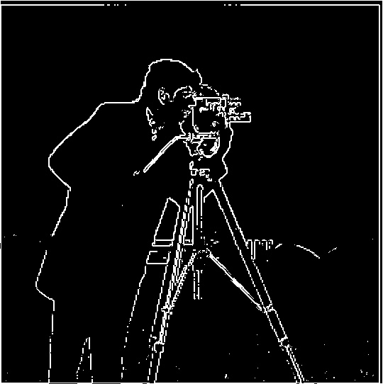
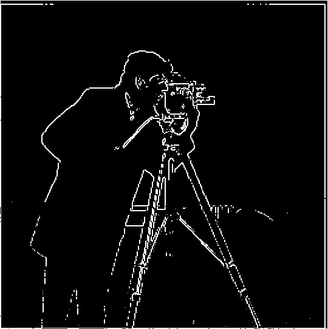
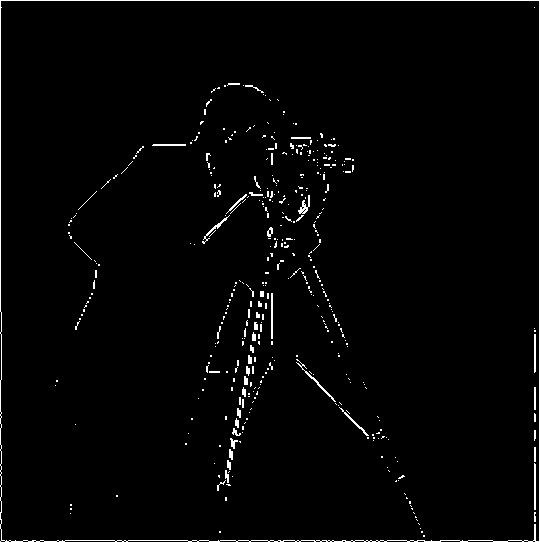
A low threshold keeps more edges, but also picks up texture in the grass. I used 0.35 as a compromise: it removes much of that noise while keeping the main outlines. At 0.50, more of the useful edges disappear.
1.3 · Fun with Filters
Derivative of Gaussian
To reduce the noise, I blurred the cameraman before taking its derivatives. I used a 9 × 9 Gaussian built from the outer product of a 1D kernel, with OpenCV choosing sigma automatically (sigma = 0). The smoothed result has cleaner edges and less texture in the background.
I also combined the Gaussian and derivative filters first, then convolved the image with each combined filter. This is the derivative of Gaussian (DoG) approach.
g = cv.getGaussianKernel(9, 0)
G = g @ g.T
dog_x = convolve2d(G, Dx, mode="full")
dog_y = convolve2d(G, Dy, mode="full")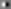
The two methods produced the same edges in the interior of the image. This is expected because convolution is associative, so combining the filters first should give the same result as applying them separately. The outer border can differ because the two-step method crops the blurred image before applying the derivative.
2.1 · Fun with Frequencies
Image Sharpening
I blur the image to get its low frequencies, then subtract the blur from the original to get the high frequencies. Adding those details back makes the image look sharper. My implementation combines this into one unsharp mask filter, using a 9 × 9 Gaussian and symmetric padding.
high = original - blurred
sharpened = original + alpha * high
unsharp_kernel = (1 + alpha) * identity - alpha * GaussianTaj Mahal

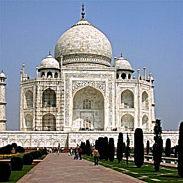
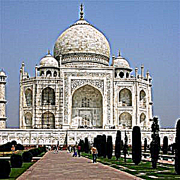
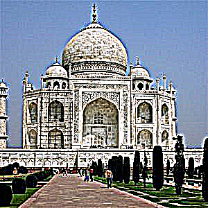
Garden
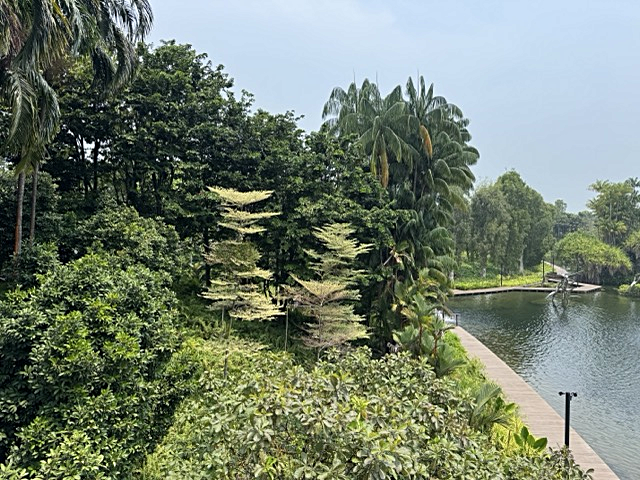
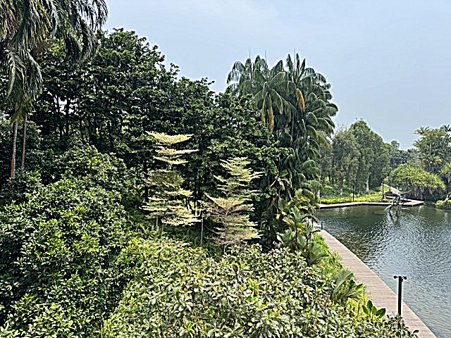
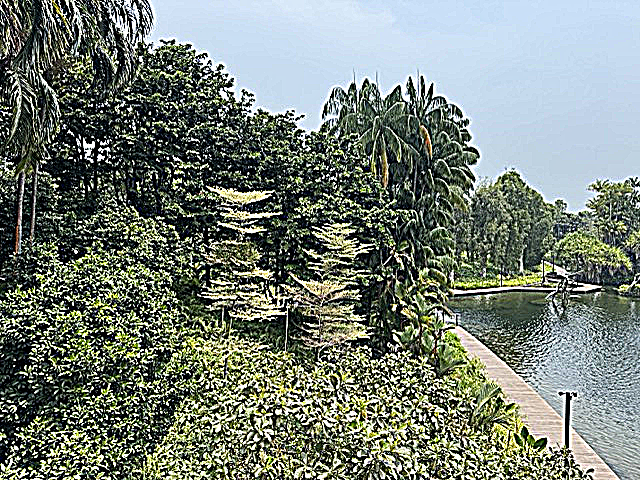
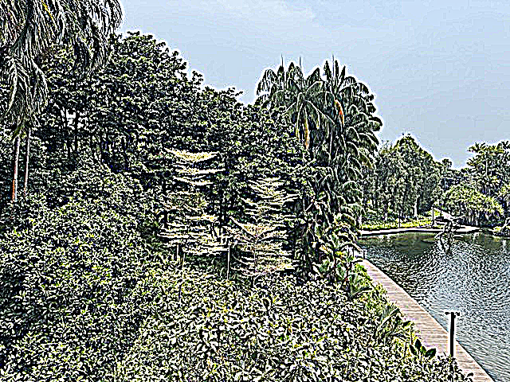
Increasing alpha brings out edges and fine details. At the largest values, the edges start to look harsh and develop halos. The high-frequency images are scaled around gray so both positive and negative values are visible.
Blurring and Resharpening
Resharpening brings back some edge contrast, but not all of the original detail. It emphasizes what remains after the blur rather than recovering the information that was lost.
2.2 · Fun with Frequencies
Hybrid Images
The approach I took to creating hybrid images was to combine the low frequencies of one image with the high frequencies of another. I first aligned the images using the provided helper, which uses two matching points to adjust their scale and rotation. I then applied a Gaussian filter to the first image and subtracted a Gaussian-filtered version of the second image from itself.
The sigma values control how much detail is removed by each Gaussian filter. A larger low-pass sigma makes the first image smoother. A larger high-pass sigma removes a smoother version of the second image, leaving more of its details in the result. The goal is for the high-frequency image to be more visible up close and the low-frequency image to become more visible from farther away.
hybrid = lowpass(image1) + (image2 - lowpass(image2))Derek and Nutmeg
Low-pass σ = 12; high-pass σ = 4. Derek supplies the low frequencies and Nutmeg supplies the high frequencies.
Ng and Efros
Low-pass σ = 7.5; high-pass σ = 2.5. Ng supplies the low frequencies and Efros supplies the high frequencies.
Zach and Didi
Low-pass σ = 1; high-pass σ = 12. Zach supplies the low frequencies and Didi supplies the high frequencies.
Alignment and Filtering
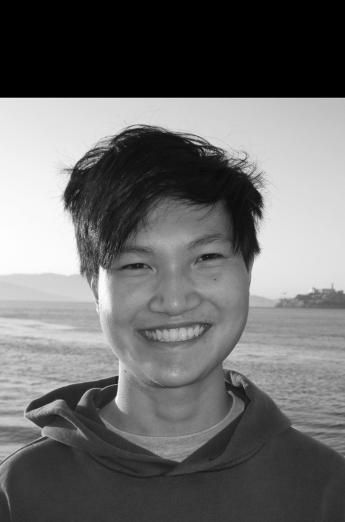
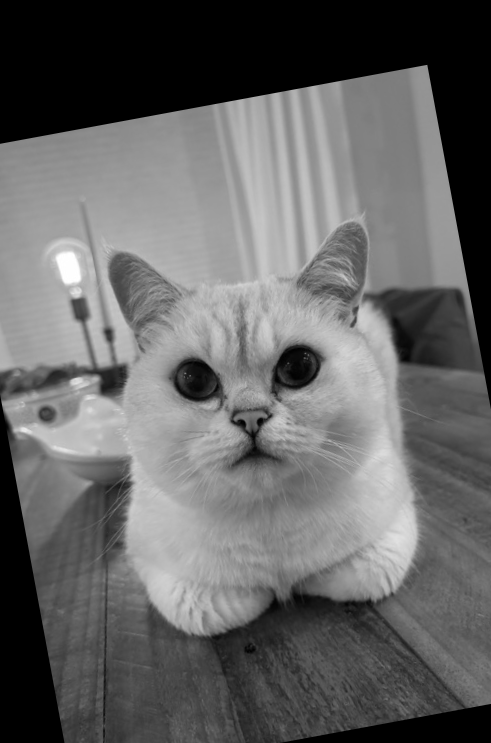
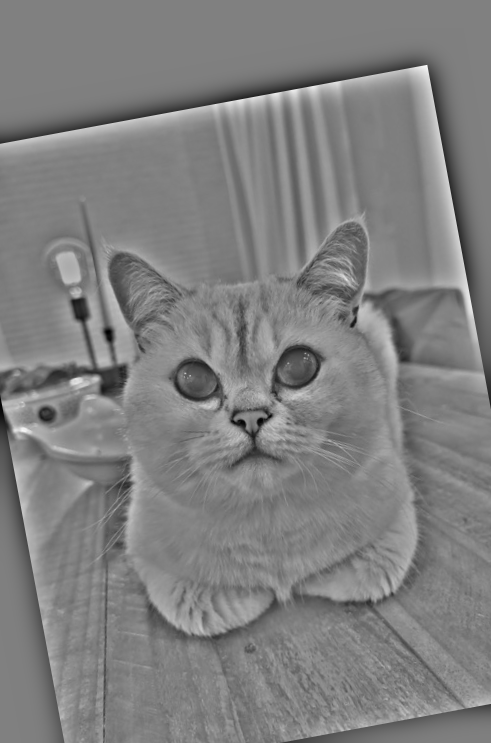
For this pair, I used a low-pass sigma of 1 for my photo and a high-pass sigma of 12 for Didi. This keeps most of the structure of my face while adding Didi’s facial details. However, the two images overlap more in frequency than the Derek and Nutmeg pair, so the result looks more like a mix of both faces rather than a clean switch between them.
The alignment also leaves visible rotated borders, and the shapes of our faces do not match exactly. These differences make the overlap more noticeable. A tighter crop and more separation between the frequency ranges could improve the result.
Frequency Analysis
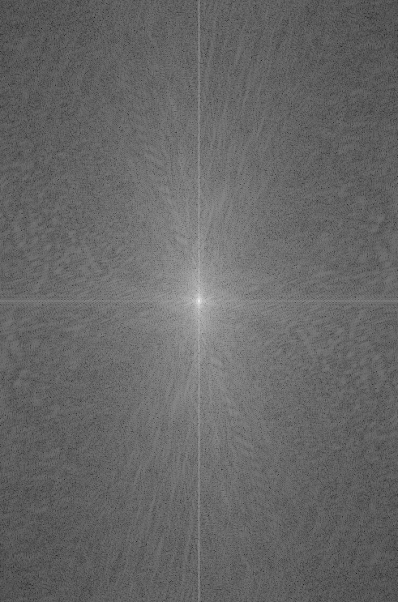
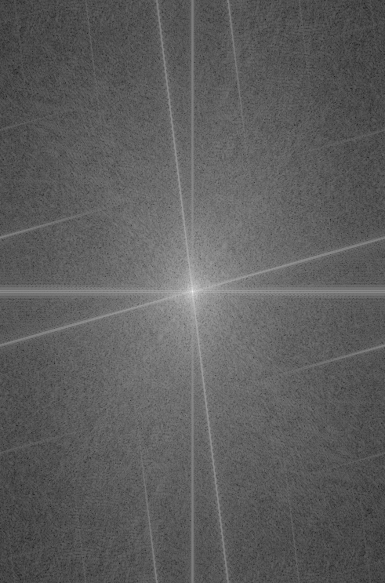
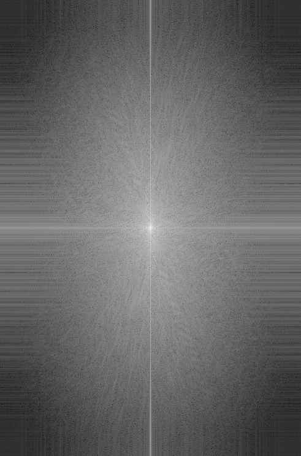
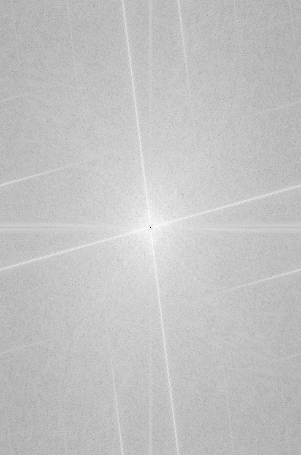
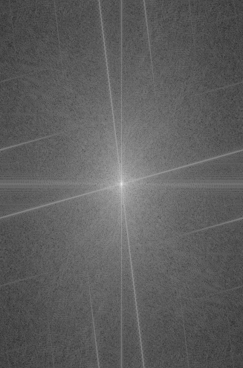
I used the log magnitude of the Fourier transform to show how the filters changed the frequency content. After shifting the transform, the low frequencies are near the center and the high frequencies are farther out. The low-pass filter reduces the outer frequencies, while the high-pass filter suppresses the center. The hybrid combines what remains from both images.
2.3 · Fun with Frequencies
Gaussian and Laplacian Stacks
I built six-level Gaussian and Laplacian stacks without downsampling. Level 0 is the original image. For the remaining Gaussian levels, I filter the original with sigma values of 2, 4, 8, 16, and 32.
Each Laplacian level is the difference between two neighboring Gaussian levels. The last level keeps the remaining low frequencies. Adding all six levels reconstructs the original.
L[i] = G[i] - G[i + 1]
L[5] = G[5]Apple Gaussian Stack

Apple Laplacian Stack
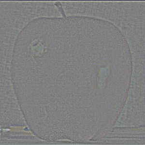
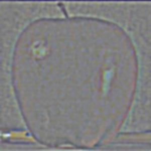
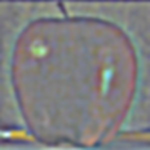
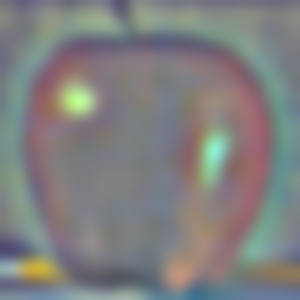
Orange Gaussian Stack

Orange Laplacian Stack
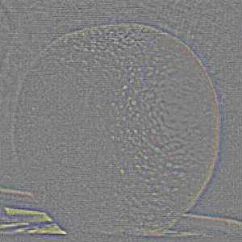
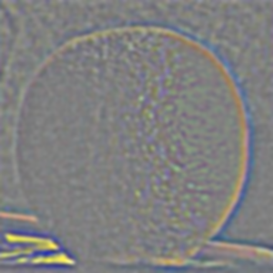
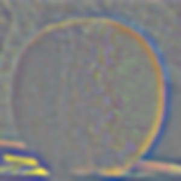
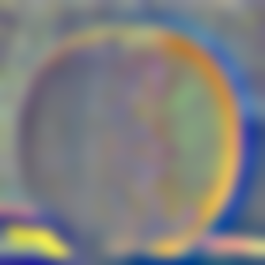
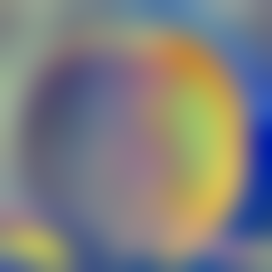
The Laplacian detail levels are scaled around gray to show signed values. The final residual is displayed directly.
Oraple Decomposition
The rows below reproduce the layout of Figure 3.42: masked apple, masked orange, and their sum at levels 0, 2, and 4, followed by the reconstructed images.

2.4 · Fun with Frequencies
Multiresolution Blending
I create Laplacian stacks for both images and a Gaussian stack for the mask. At each level, I use the blurred mask to combine the two images, then sum the blended levels. This gives a wider transition for low frequencies and a narrower transition for fine details.
blend[i] = mask[i] * A[i] + (1 - mask[i]) * B[i]
result = sum(blend)Oraple
A vertical mask keeps the apple on the left and the orange on the right. Blurring the mask across the stack softens the seam.


Ng and Efros


This example combines two portraits. The blend softens the change between the faces, though differences in their features are still visible.
Zach and Pineapple
For this blend, I used an irregular mask around the face instead of a straight split. The six-level stack uses sigma values of 1, 2, 4, 8, and 16. Blurring the mask helps the face transition into the pineapple.


Masked Inputs


Masked Laplacian Stacks
Each row shows the contribution from Zach, the contribution from the pineapple, and their sum. The detail levels preserve texture; the residual carries the broad colors and shading.


Reflection
What I Learned
The most important thing I learned from this project was how separating an image into different frequency ranges makes it easier to work with in many different ways. For sharpening, I subtracted a blurred version from the original to isolate the details, then added them back with more weight. For blending, I used the Laplacian stacks to combine the fine details and larger changes in color separately. This allowed for a smoother transition between the images without blurring away all of their details.